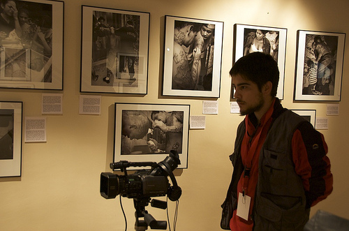
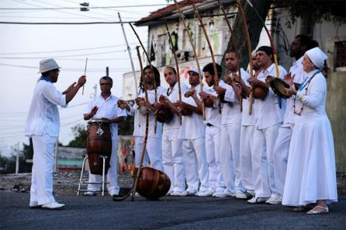

Aruanda – документальный фильм о капуэйре и местре Poncianinho
Азул Серра (Azul Serra), английский режиссёр бразильского происхождения, снял документальный фильм о капуэйре «Aruanda». Съёмки фильма проходили в Лондоне при участии местре Poncianinho и группы Cordão de Ouro. Сам режиссёр является учеником местре Poncianinho.
Подробности о содержании фильма на сайте режиссёра даны расплывчато. Сайт „Capoeira Science“, на котором был впервые был размещён трейлер, также не даёт никаких комментариев о сюжете. Возможно, детали могут рассказать читатели Capoeira.in в комментариях к этой заметке.
Трейлер фильма появился на видео-сервисе YouTube 10 декабря 2010 года. Версия в высоком качестве находится на сайте режиссёра.
Купить фильм можно непосредственно в Лондоне на месте проведения занятий группы CDO. Или попробовать заказать почтой, написав письмо по адресу dvdaruanda@gmail.com.

Режиссёр фильма Азул Серра родился 1983 году в Сан-Пауло (Бразилия), там же закончил Школу кино при университете F. A. A.P. в 2006 году. С 2007 проживает в Лондоне, работает оператором, режиссёром, постановщиком-фрилансером и автор многочисленных видео-проектов.

Саундтрек к фильму был написан известным бразильским музыкантом Динью Насименту (Dinho Nascimento) вместе с группой «Orquestra de Berimbau». Основным инструментом Динью является беримбау. Своё мастерство владения этим инструментом он неоднократно доказывал в многочисленных видео на YouTube, в частности «Berimbau Blues» и одноимённом музыкальном альбоме. Подробная биография музыканта на английском размещена на сервисе MySpace.